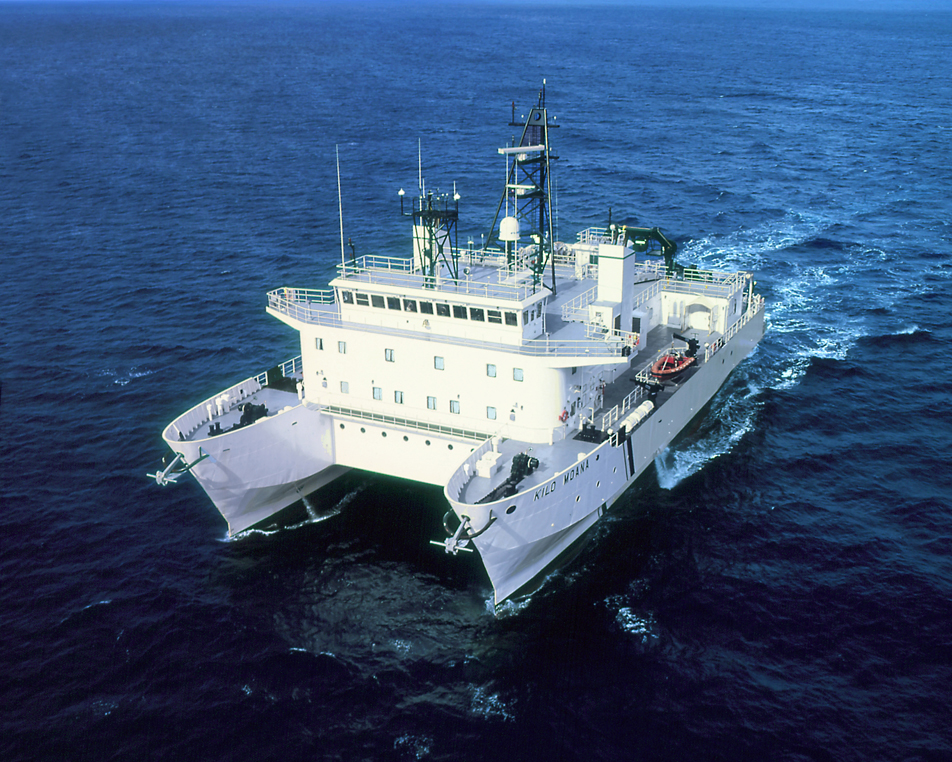

Project Overview
The field work detailed in this blog post is occuring between January 11th, 2022 and February 23rd, 2022.
The research vessel (R/V) Kilo Moana is a 186′ Small Waterplane Area Twin Hull (SWATH) vessel owned by the
U.S. Navy and operated by the University of Hawai‘i Marine Center. The ship acts as a multi-purpose oceanographic
research vessel with extensive equipment for geophysical, physical oceanographic, meteorological, and radioisotope research.

The overview text will continue here.
The Science
Life at Sea
Mapping
Dredging
Sample Processing
The End?